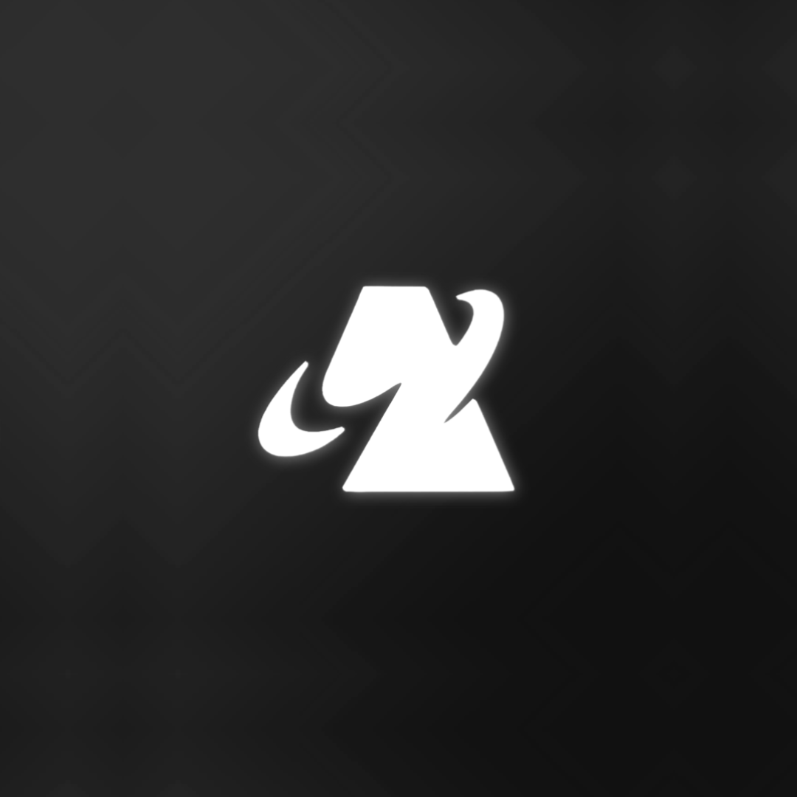

Anisubslash
To install anisubslash on your ios device:
- Tap the Share icon in Safari (at the bottom of the screen on iPhone, or top on iPad).
- Scroll down and tap Add to Home Screen.
- Tap Add in the top right corner to confirm.
- The app will now appear on your Home Screen like a native app.